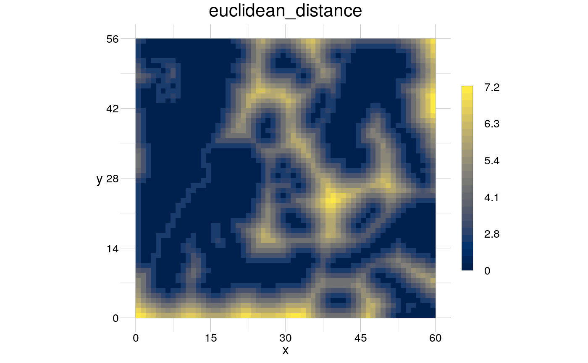
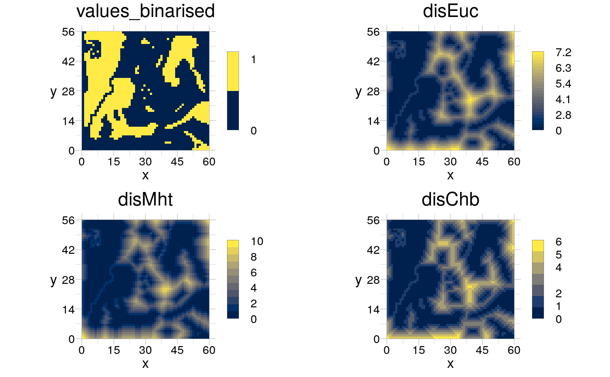
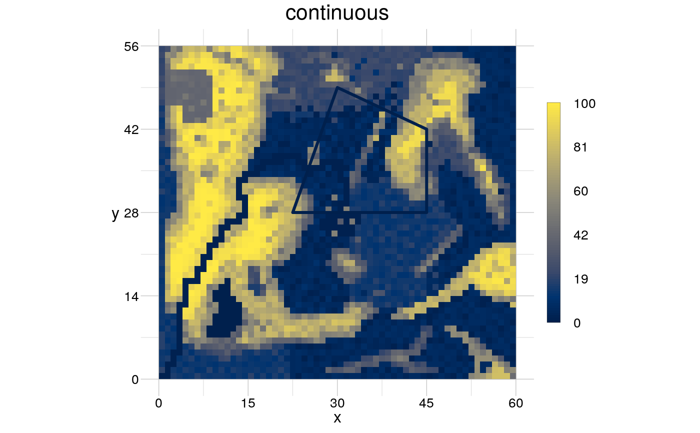

Visualise raster and geom objects
visualise(raster = NULL, geom = NULL, theme = NULL, trace = FALSE, image = FALSE, new = TRUE, ...)
| raster | [ |
|---|---|
| geom | [ |
| theme | [ |
| trace | [ |
| image | [ |
| new | [ |
| ... | [various] |
Returns invisibly an object of class recordedplot, see
recordPlot for details (and warnings).
To create a plot with your own style, design it with
setTheme and use it in theme.
In case you want to plot an image (simiar to
plotRGB), you have to provide a RasterStack or
RasterBrick with the three layers red, green and
blue and set image = TRUE.
input <- rtData$continuous binarised <- rBinarise(input, thresh = 40) visualise(raster = rDistance(binarised), trace = TRUE)#> #> #> #># visualise also RasterBrick/-Stack objects getDistances <- list(disEuc = list(operator = "rDistance"), disMht = list(operator = "rDistance", method = "manhattan"), disChb = list(operator = "rDistance", method = "chessboard")) distances <- modify(input = binarised, by = getDistances, merge = TRUE) distances <- raster::brick(binarised, distances) visualise(distances)# define a geometry coords <- data.frame(x = c(30, 60, 60, 40), y = c(40, 40, 60, 70), fid = 1) window <- data.frame(x = c(0, 80), y = c(0, 80)) (aGeom <- geomPolygon(anchor = coords, window = window, col = "blue"))#> class : geom #> type : polygon #> features : 1 (4 vertices) #> window : 0, 80, 0, 80 (xmin, xmax, ymin, ymax) #> extent : 30, 60, 40, 70 (xmin, xmax, ymin, ymax) #> scale : absolute #> crs : NA #> attributes : 2 (fid, n)# if plotted on top of an existing plot, the relative coordinate values # will be used to construct the grob. visualise(raster = input, geom = aGeom)visualise(geom = aGeom, new = TRUE)